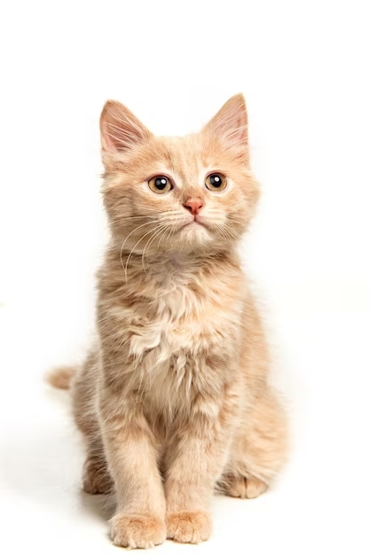

GATOS

ORIGEM
A origem do gato doméstico se deu pela aproximação dos próprios animais silvestres dos humanos. Tudo isso porque esses felinos começaram a ver que havia uma grande quantidade de roedores perto das casas. Atraídos pela alimentação abundante, alguns tipos de gatos selvagens passaram a ir em busca desses alimentos
CURIOSIDADES
- Um gato consegue ouvir sons de alta frequência, cerca de 2 oitavas acima de qualquer humano.
- Um gato consegue correr a 49 km por hora, em curtas distâncias.
- Um gato salta 5 vezes a sua altura num único salto.
- Alguns gatos já sobreviveram a quedas de 20 metros, devido ao reflexo de endireitamento.